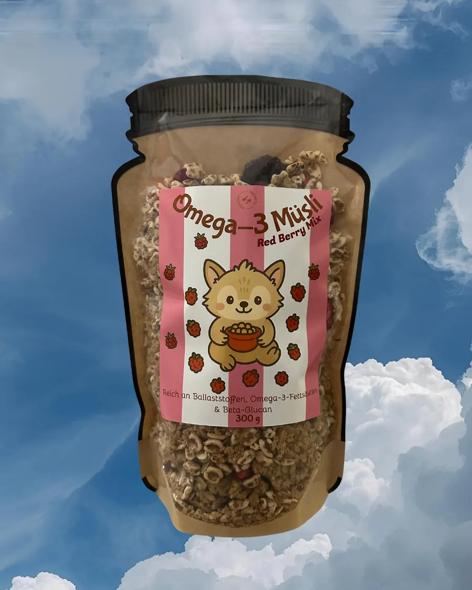

Best SellerBest seller8 Uhr8 amGranolaGranola
300 g300 g
Knusprig wie jedes Knuspermüsli. Nur kommt das Knusprige bei uns aus Rapsöl, ganz ohne Kokosfett oder Palmöl.As crunchy as any crunchy granola. Ours just gets its crunch from rapeseed oil, with no coconut fat or palm oil.
9,50 €inkl. Versandshipping included
Zutaten und ZubereitungIngredients and how to use
- ZutatenIngredients
- bio Haferflocken, bio Dinkelpops, Rapsöl, bio Ahornsirup, bio Kleie, gefriergetrocknete Beeren, Vanilleorganic oat flakes, organic spelt pops, rapeseed oil, organic maple syrup, organic bran, freeze dried berries, vanilla
- AllergeneAllergens
- GlutenGluten